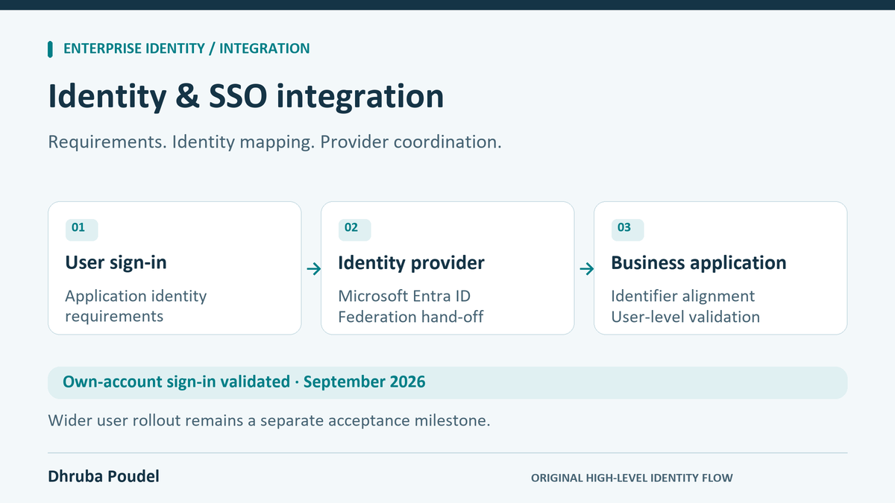

Anonymous enterprise case · Identity integration
Enterprise identity
& SSO integration
Connect the requirements.
Validate the sign-in.
- The problem
- Providers need a consistent view of application identity, federation requirements and the acceptance step.
- My contribution
- Clarify the hand-offs, align identifier requirements and follow the integration through user-level testing.
- Delivery boundary
- Own-account validation is evidenced. Wider user rollout has a separate acceptance milestone.

A sign-in integration needs a shared technical contract.
Single sign-on connects an identity provider, an application and the people responsible for each. Progress depends on the right configuration requirements reaching the right provider, with a consistent application-side identity and a clear way to verify the result.
I worked across the managed-service and application-provider hand-offs to turn those dependencies into actionable requirements and user-level sign-in checks.
Translate configuration dependencies into delivery actions.
My contribution covered Microsoft Entra ID–application SSO requirements, federation metadata exchange and email-based user-identifier alignment. I coordinated the information providers needed, clarified ownership of the next configuration step and followed up the sign-in result.
- Identify the identity-provider and service-provider hand-off requirements.
- Clarify federation metadata and user-identifier mapping dependencies.
- Coordinate managed-service and application-provider actions.
- Validate access for my own account and raise the next user-enablement steps.
The case demonstrates technical business analysis, integration coordination and user-level validation alongside provider-managed configuration.
Requirements, mapping, then a concrete sign-in check.
- 01 · DEFINEAgree the hand-off
Connect application requirements with identity-provider and service-provider configuration dependencies.
- 02 · ALIGNResolve identity mapping
Confirm the agreed identifier format and the matching application-side user identity with the responsible providers.
- 03 · VALIDATECheck the user journey
Test sign-in for the defined account, record the outcome and keep further user enablement behind its acceptance step.
This diagram and workflow are a public abstraction of my contribution. They contain no tenant identifiers, certificates, authentication metadata or live configuration.
Separate retained evidence from illustrative acceptance criteria.
The retained September correspondence supports both the coordination work and a successful sign-in reported for my own account. The broader acceptance examples below explain how the integration can be reviewed; they are illustrative criteria, not additional executed tests.
| Item | Supported contribution or result | Scope |
|---|---|---|
| Provider hand-off requirements | Authored correspondence coordinates federation metadata and user-identifier requirements between the responsible providers. | Requirements and coordination evidenced. |
| Own-account SSO sign-in | I reported successful SSO sign-in and requested the next steps for additional users. | One account validated.Wider rollout separately gated |
| Example check | Acceptance criterion | Evidence status |
|---|---|---|
| Matching identity | The application-side identity matches the identifier format agreed with the identity provider. | Illustrative criterion. |
| Mapping discrepancy | Resolve an unmatched identifier before accepting the user-enablement step. | Illustrative criterion. |
| Wider user enablement | Confirm intended user coverage and obtain the responsible owner’s acceptance. | Illustrative criterion; rollout outcome unverified. |
Own-account validation, with a clear next acceptance step.
Successful sign-in for my own account was recorded in September 2026. The case establishes my requirements, identity-mapping and provider-coordination contribution, followed by that user-level validation.
Wider rollout remains separately verified.
The retained evidence does not establish successful enablement for every intended user. Wider rollout and its owner acceptance remain separate from the sign-in result shown here.
Client and application identities are withheld. The public illustration and criteria retain the technical decisions and delivery boundaries while keeping operational authentication material private.